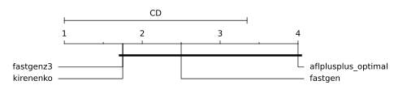
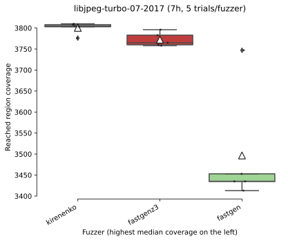
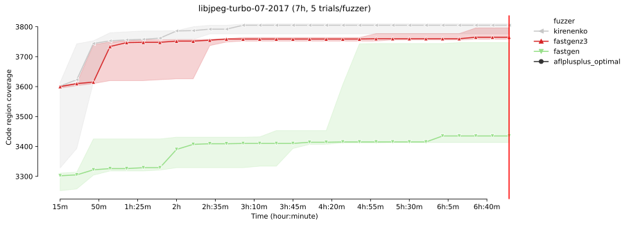
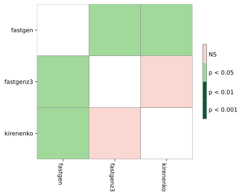
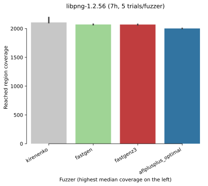
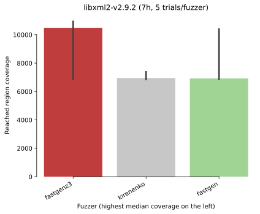
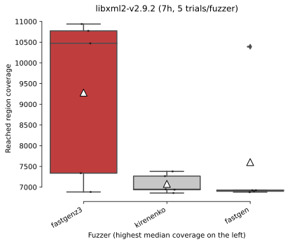
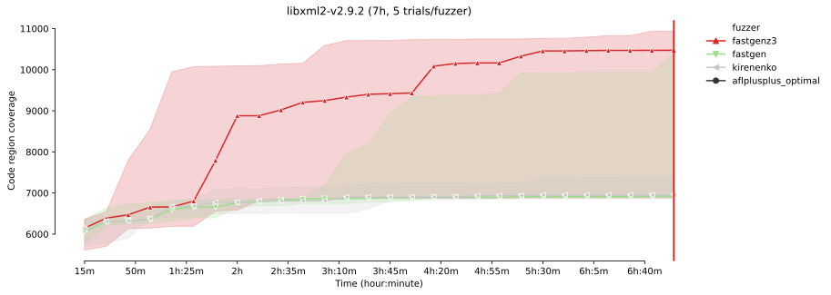
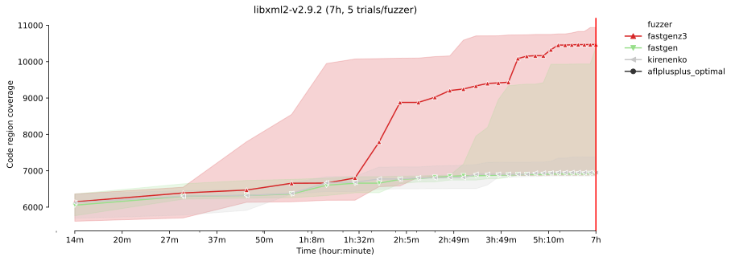
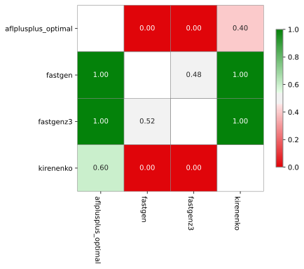

FuzzBench: kirenenko report
(experiment incomplete/still running...)
warning
Please consider this as a preliminary report to
demonstrate the capabilities of FuzzBench. While we have
tried our best, we have not confirmed that we configured
everything correctly. We are hoping to work together
with the community to validate results and improve the
set of fuzzers, benchmarks, and their configurations in
the future.
See FAQ
for more details.
experiment summary
We show two different aggregate (cross-benchmark) rankings of fuzzers. The first is based on the average of per-benchmarks scores, where the score represents the percentage of the highest reached median code-coverage on a given benchmark (higher value is better). The second ranking shows the average rank of fuzzers, after we rank them on each benchmark according to their median reached code-covereges (lower value is better).By avg. score
| average normalized score | |
|---|---|
| fuzzer | |
| fastgenz3 | 99.30 |
| aflplusplus_optimal | 89.40 |
| fastgen | 88.43 |
| kirenenko | 87.98 |
By avg. rank
| average rank | |
|---|---|
| fuzzer | |
| fastgenz3 | 1.75 |
| kirenenko | 1.75 |
| fastgen | 2.50 |
| aflplusplus_optimal | 4.00 |
-
Critical difference diagramThe diagram visualizes the average rank of fuzzers (second ranking above) while showing the significance of the differences as well. What is considered a "critical difference" (CD) is based on the Friedman/Nemenyi post-hoc test. See more in the documentation.
Note: If a fuzzer does not support all benchmarks, its ranking as shown in this diagram can be lower than it should be. So please check the list of supported benchmarks for the fuzzer(s) of your interest. The list could be specified in the fuzzer's README.md like this.
-
Median code-coverages on each benchmark
fuzzer aflplusplus_optimal fastgen fastgenz3 kirenenko benchmark libjpeg-turbo-07-2017 NaN 3435.0 3765.0 3805.0 libpng-1.2.56 2002.0 2071.0 2070.0 2107.0 libxml2-v2.9.2 NaN 6925.0 10472.0 6950.0 sqlite3_ossfuzz 27684.0 32728.0 33046.0 28270.0
libjpeg-turbo-07-2017 summary
Ranking by median reached code coverage
Reached code coverage distribution
Mean code coverage growth over time
Mean code coverage growth over time

* The error bands show the 95% confidence interval
around the mean code coverage.
-
Sample statistics and statistical significance (code coverage)
Code coverage sample statistics
count mean std min 25% median 75% max fuzzer time kirenenko 25200 5.0 3800.4 13.903237 3776.0 3803.0 3805.0 3808.0 3810.0 fastgenz3 25200 5.0 3772.4 16.471187 3758.0 3760.0 3765.0 3783.0 3796.0 fastgen 25200 5.0 3496.6 140.693994 3413.0 3435.0 3435.0 3453.0 3747.0
Vargha-Delaney A12 measure The table summarizes the A12 values from the pairwise Vargha-Delaney A measure of effect size. Green cells indicate the probability the fuzzer in the row will outperform the fuzzer in the column.
Mann-Whitney U test  The table summarizes the p values of pairwise Mann-Whitney U tests. Green cells indicate that the reached coverage distribution of a given fuzzer pair is significantly different.
libpng-1.2.56 summary
Ranking by median reached code coverage
Reached code coverage distribution

Mean code coverage growth over time

Mean code coverage growth over time

* The error bands show the 95% confidence interval
around the mean code coverage.
-
Sample statistics and statistical significance (code coverage)
Code coverage sample statistics
count mean std min 25% median 75% max fuzzer time kirenenko 25200 5.0 2139.4 47.130669 2103.0 2105.0 2107.0 2190.0 2192.0 fastgen 25200 5.0 2070.8 2.863564 2067.0 2070.0 2071.0 2071.0 2075.0 fastgenz3 25200 5.0 2069.2 5.019960 2064.0 2064.0 2070.0 2074.0 2074.0 aflplusplus_optimal 25200 5.0 2001.8 1.095445 2000.0 2002.0 2002.0 2002.0 2003.0
Vargha-Delaney A12 measure The table summarizes the A12 values from the pairwise Vargha-Delaney A measure of effect size. Green cells indicate the probability the fuzzer in the row will outperform the fuzzer in the column.
Mann-Whitney U test
 The table summarizes the p values of
pairwise Mann-Whitney U tests.
Green cells indicate that the reached
coverage distribution of a given fuzzer pair
is significantly different.
The table summarizes the p values of
pairwise Mann-Whitney U tests.
Green cells indicate that the reached
coverage distribution of a given fuzzer pair
is significantly different.
libxml2-v2.9.2 summary
Ranking by median reached code coverage
Reached code coverage distribution
Mean code coverage growth over time
Mean code coverage growth over time

* The error bands show the 95% confidence interval
around the mean code coverage.
-
Sample statistics and statistical significance (code coverage)
Code coverage sample statistics
count mean std min 25% median 75% max fuzzer time fastgenz3 25200 5.0 9281.0 1994.863654 6884.0 7337.0 10472.0 10774.0 10938.0 kirenenko 25200 5.0 7078.6 229.840814 6858.0 6938.0 6950.0 7267.0 7380.0 fastgen 25200 5.0 7604.2 1557.986264 6879.0 6901.0 6925.0 6925.0 10391.0
Vargha-Delaney A12 measure The table summarizes the A12 values from the pairwise Vargha-Delaney A measure of effect size. Green cells indicate the probability the fuzzer in the row will outperform the fuzzer in the column.
Mann-Whitney U test The table summarizes the p values of pairwise Mann-Whitney U tests. Green cells indicate that the reached coverage distribution of a given fuzzer pair is significantly different.
sqlite3_ossfuzz summary
Ranking by median reached code coverage

Reached code coverage distribution

Mean code coverage growth over time

Mean code coverage growth over time

* The error bands show the 95% confidence interval
around the mean code coverage.
-
Sample statistics and statistical significance (code coverage)
Code coverage sample statistics
count mean std min 25% median 75% max fuzzer time fastgenz3 25200 5.0 32920.0 527.672721 32159.0 32630.0 33046.0 33324.0 33441.0 fastgen 25200 5.0 32893.4 537.986338 32321.0 32571.0 32728.0 33162.0 33685.0 kirenenko 25200 5.0 28510.8 1365.154094 26966.0 27745.0 28270.0 29022.0 30551.0 aflplusplus_optimal 25200 5.0 27673.4 3045.606064 23529.0 26236.0 27684.0 29377.0 31541.0
Vargha-Delaney A12 measure  The table summarizes the A12 values from the pairwise Vargha-Delaney A measure of effect size. Green cells indicate the probability the fuzzer in the row will outperform the fuzzer in the column.
Mann-Whitney U test The table summarizes the p values of pairwise Mann-Whitney U tests. Green cells indicate that the reached coverage distribution of a given fuzzer pair is significantly different.
experiment data
You can download the raw data for this report here.Check out the documentation on how to create customized reports using this data. Also see some example Colab notebooks for doing custom analysis on the data here.
The experiment was conducted using this FuzzBench commit: e39c7698a0176e02efaade1a238f29eec60ac91a
Experiment Description:
(None,)